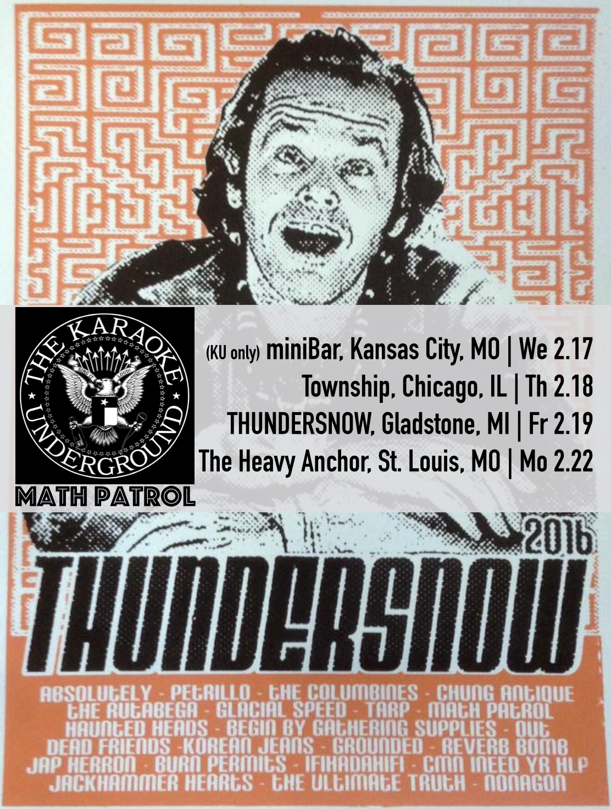

KU returns to the Midwest for THUNDERSNOW 2016, hitting the road with Kaleb’s experimental/noise/soul band Math Patrol for dates in Kansas City, Chicago, Gladstone, and St. Louis. The Chicago show in particular looks like it’ll be a big night, get there early if you want to sing!
THUNDERSNOW TOUR 2016
Wednesday, 2/17 @ miniBar, Kansas City, MO
Thursday, 2/18 @ Township, Chicago, IL with Math Patrol
Friday, 2/19 @ PRF THUNDERSNOW 2016, Gladstone, MI with Math Patrol
Monday, 2/22 @ The Heavy Anchor, St. Louis, MO with Math Patrol